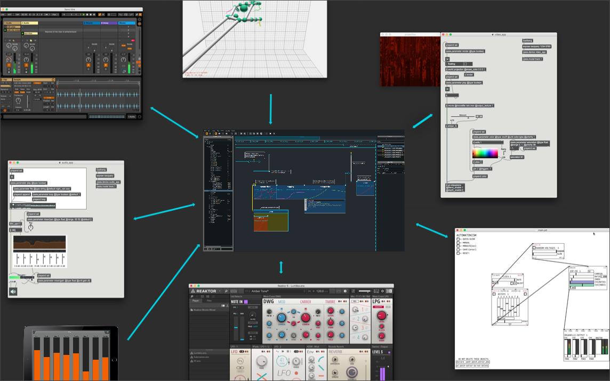

Introduction
Score is an interactive sequencer for intermedia authoring. It allows to create flexible and interactive scenarios and is especially designed for live performance, art installations, museography or any context requiring a precise and interactive execution of timed events.
Score brings a flexible solution to the management and execution of events and their evolution in time. Modern DAWs now offer a number of tools to write precise automations along a timeline. However, as powerful as these are in the context of fixed-time media, such solutions are of little help when introducing interactivity in the execution of the produced scenarios. On the other hand, a number of software applications allow to trigger events in an interactive way, through a cue-based paradigm. However, these may not offer automation facilities as advanced as those found in modern DAW and also often rely on a sequential and linear triggering of events.
Score brings these two approaches together in an unified timeline. Scenario authoring and execution in Score thus make it possible to write fixed-timed automations as well as interactive sequences of automations. Most importantly, these two paradigms can be combined and used in parallel or hierarchically, which provides a high level of control and of openness, as is required by today’s creation.

A sequencer for distributed media systems
Unlike other digital multimedia workstations, Score does not aim at being an all-at-once software. Instead, it is designed to fully integrate with dedicated software and hardware one already uses in their own personal workflow.
While recent versions of Score allow to process media (such as audio), it takes its root as a remote controller allowing to store & recall snapshots and automations for some distant applications through various protocols (OSCQuery, Open Sound Control, Midi or Minuit). Hence it can easily be used in large setups involving video, audio and/or light software or hardware, in order to provide a unified and global solution to control parameters changes in a synchronous or asynchronous way across diverse applications and domains.

Score's features in a nutshell
This documentation will walk you through Score's basis concepts and advanced features to ease the mastering of its features.
- Store & recall snapshots
- Use processes to write your application's parameters behaviour in time (BPF, interpolations, gradients)
- linearly organize snapshots & processes on the timeline
- trigger events interactively
- loops
- branching scenarios
And more...